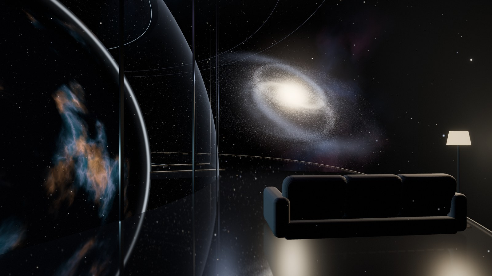

The Crown
Arcadia above ground. A white ring 276 m across floats 40 m over the Stone Garden, with five spires, a mirror Orb at its centre and windows at eye level all round. It is Arcadia by night: the sunset, dinners, music, guests and the stars. Nothing holds it up, and nothing links it to the ground but portals and the pods.

What it looks likeA floating crown of white ceramic
The shape. One continuous ring, 16 m wide, whose roof rises five times into sharp spires 90 m high and falls between them to 50 m. The roof line follows one smooth curve, 50 + 40·c⁶ metres, where c goes from 0 in the dips to 1 at each spire tip, so the spires look drawn rather than built. Seen from the plain the ring hangs over the garden with sky showing under it.
The skin. Glazed white ceramic tiles fired from Mars soil, with a titanium band along the roof edge and round the underside. There is no glass wall anywhere: Mars sunlight carries harsh ultraviolet and the walls must be thick. Instead, windows at eye level, 2.5 m tall and 5 m wide every 8 m, run round the main floor on both sides, so whoever walks along the ring sees out, to the plain on one side and the Stone Garden on the other; slots run round each spire's upper floor at +55 m. They are cut through 3 m of wall and lined in bronze, glazed with thick laminated glass that stops the ultraviolet, so the high sun never reaches far in; at sunset it shines straight down the rooms.
The Orb hangs at the centre, a mirror sphere 48 m across from +48 to +96 m, reflecting the ring, the plain and the sky. Inside, rooms ring the Wormhole Gate, a ball in its middle. At night the windows of its rest rooms glow softly in its upper half, a thin line of light marks the window slots of the floors below, and when the universe is switched on, a faint blue light shows through them.
At night the window slots glow warm, a red beacon burns on each spire tip, and under each spire a disc of pale blue light marks the anti-gravity drive, with rings of light pulsing slowly on the ground below.

Materials
The main floorTen parts round a ring
The ring is divided into ten parts of 36°: five under the spires, each with an upper floor, and five in the dips between them. A moving walkway, the Glide, runs 779 m round the inner side past every room.
| Part | Rooms, main floor | Upper floor |
|---|
The rooms and their codes are those of the floor plans, where each room has its purpose, its second use and its size. Gross, to the outside of the walls, each part is 995 m² on the main floor, and each spire adds an upper floor of 726 m² at +51 m.
The OrbThe universe in the room, and a gate to anywhere
The Orb is a mirror ball 48 m across floating over the Sun Well, from +48 to +96 m. At its heart floats a ball 18 m across, the Wormhole Gate, in a round space 24 m across, and the rooms sit around it on three floors, five on each, like the boxes of an opera house. Switch the universe on and it appears in the room itself, in 3D, all around you: future-tech VR, shown directly in the space of the room, with no screen, no glasses and no ball to look into.

Switch it on and the lights go down and the universe appears in the room in 3D: in front of Jim, behind him, above and below, close enough to reach into. It is future-tech VR shown directly in the space of the room, so there is no screen and no headset, and everyone in the room sees the same sky. He zooms it with his hands or his voice: from the web of galaxies to the Milky Way, the solar system, Mars and Arcadia, or Earth and his home town. It zooms in time too, so the planets move and the sky turns. Switched on in every room, it fills the whole Orb. Switch it off and the room comes back, with its windows to the real sky. Every room has the switch, and the voice works anywhere.
The dashboard. In the corner of Jim's view two small globes always float: Earth, home, and Mars, where he lives now, each with its weather, live. On Mars it shows Arcadia's weather station: temperature, wind, dust and the time of sunset. On Earth it shows the weather in his home town, a few minutes old because of the radio delay. One touch or one word hides it, and another brings it back.
The rest rooms. The top floor holds five quiet rooms for resting in the evening. Each has a day bed, a window out to the sky and the plain, and a glass wall onto the Gate that turns frosted for a nap. These windows are the one place in Arcadia where Jim looks straight out through a big pane, so they are made to stop radiation (below). He sleeps below ground (chapter 08).
The Gate is the ball in the middle, floating free in a round space 24 m across. It sends people and things to any place in the universe and any time, past or future, instantly, so it is a time machine too. Physicists expect the mouth of a wormhole to look like a ball, a round window onto the place at its other end; the wormhole in the film Interstellar was drawn that way from Kip Thorne's equations. This is how it works:
1 · Choose. With the universe on, Jim zooms to the place and sets the time. The target glows in the room, among the stars around him.
2 · Step in. He walks across a short bridge, 3 m wide, from the inner lane of the lounge floor into the ball. Things go in the same way, on a small cart that runs along the bridge, or carried by a robot.
3 · Send. He presses send, or says it. The ball shoots him like a beam of light, straight to the target in the universe around the room, and in that instant he is there, at that place and that time. That is how the wormhole works.
4 · Come back. At the far end a ball like this one opens. He steps in and presses home, and the light brings him back into the Gate, onto the bridge. When the Gate is idle, a glass door closes the bridge and the ball shows the sky above the Orb.
| Floor | Rooms | Area |
|---|
On every floor the five rooms sit between two lanes 2.4 m wide: the outer lane along the windows, looking out over the plain, and the inner lane along the glass, looking in onto the Gate. A passage under each spire joins the two. Areas are measured to the inside of the shell, so the +72 floor, across the Orb's middle, is the largest. The shell is built like the Crown's walls, with a mirror skin over 2 m of ice in sealed cells. Every room is on the Orb's floor plans.
What the universe can show
The Sun Well under the Orb
Below the Orb, at the centre of the Stone Garden, the Sun Well is a glass lens 20 m across over the Pentagon's atrium, 68 m deep. It is a sky lens: lamps behind it give the atrium the sky that is outside at that moment, its colour and the sun's place in it, and in a dust storm they keep the same bright sky. Real sunlight can't reach 68 m down a narrow well at 40° N, and the ground stays clear of mirrors, so Jim takes the real sun up in the Crown's rooms and the Orb's rest rooms.
The Orb's dock
Round the Sun Well stands the Orb's dock, a ring of dark basalt 31 m across and 5.5 m high with a bronze band and five bronze pads on top. The Orb can come down onto the pads, about 45 m below where it floats, for service or if its drive ever stops. Seated there it clears the ring by half a metre and the lens by 2.4 m. A hatch in its base opens onto the dock, and a stair and a lift inside the ring go down into the atrium. The rest of the ground is built too: a paved pentagon over the Pentagon, the Stone Garden inside it, and a glass pavilion at each corner (chapter 01).
VR that shows the universe directly in the space of a room, in 3D, seen with bare eyes from every side by everyone there, does not exist yet. Real today: 3D displays a few tens of centimetres across that show an image floating in the air, VR headsets, and planetarium software that zooms the real universe from survey data (OpenSpace, backed by NASA). Real fallback: light VR glasses showing the same universe.
The rest rooms' windows are clear panes that stop cosmic rays about as well as the Crown's 3 m wall. Real fallback: deep windows built like aquarium walls, about 1.5 m of clear acrylic and water; hydrogen-rich layers this thick shield nearly as well as the wall. Resting there for part of the day fits Jim's dose budget (chapter 08).
Choose a place and a time, step into the ball and press send: it shoots you like light to that place, instantly, and the far ball brings you back. On paper physics allows something like it: a wormhole's mouth looks like a ball, and in 1988 Kip Thorne and his colleagues showed that a wormhole could also be made into a time machine. But holding one open wide enough to walk through would need matter with negative energy, which nobody knows how to make, so the Gate is a dream. In the design it is the ball in the middle of the Orb, and the beam of light is what you see when it sends you.
How it floatsFive anti-gravity drives
A drive in the tip of each spire makes a field that pushes against the ground below it, like a magnet over a superconductor but with no track. The field reaches down as a column about 70 m wide; the pale rings on the ground show where it touches. The Crown weighs about 155,000 tonnes, so on Mars each drive carries 115 MN, more than three Saturn V rockets push at lift-off. The Orb has a small drive of its own.
If a drive fails, the other four carry the load: each drive is sized to hold the whole Crown alone. The drives run on Arcadia's grid, with batteries in each spire for a day without power.
If every drive failed, the stored energy lets the Crown down slowly onto five pads on the ground, one under each spire. They are the centres of the five field rings: discs of dark basalt 14 m across with a bronze rim, set in the corners of the paved pentagon, on real foundations that go down into the ice. That is also where the Crown sat while it was built.
Why not legs? The first design stood on five legs. Jim chose anti-gravity so that nothing touches the ground and the garden runs free under the ring.
How it is builtWalls of ice inside a ceramic shell
The walls and roof are 3 m thick. Inside a shell of fired Mars soil, 2.2 m of solid water ice fills sealed cells. Ice is rich in hydrogen, and hydrogen is the best stopper of the cosmic rays that bathe the surface of Mars. NASA's Mars Ice Home study (2016) used the same idea.
The ice is also Arcadia's water store: about 90,000 tonnes, as much as 36 Olympic pools hold. It is cut from the ground on site and stays frozen because an insulating layer keeps the rooms' warmth out of it and the cold outside keeps it below −20 °C.
With 3 m of wall and roof round every room, cosmic rays in the Crown drop to about a third of the open plain's. That is an estimate; a full radiation calculation comes with the engineering design. Jim sleeps below ground, where 16 m of soil stops almost all of it (chapter 08).
Inside, the air pushes on every wall with 70 kPa, 7 tonnes on each square metre. The floors and cross walls every 4 m tie the shell together like the ribs of a ship.
| Layer, outside to in | Thickness |
|---|---|
| Glazed ceramic skin | 0.1 m |
| Sintered regolith shell, the structure | 0.3 m |
| Water ice in sealed cells, the shield | 2.2 m |
| Insulation, aerogel blankets | 0.2 m |
| Airtight liner, services and the finish | 0.2 m |
How it goes together
- Robots grade the site and build the five pads and the Pentagon first (chapter 10).
- The foundry on L3 fires the shell panels; an ice plant cuts ice blocks from the Pentagon dig.
- The ring is assembled 2 m above the pads on temporary supports, one 36° part at a time, and closed and pressure-tested.
- The drives in the spires switch on and lift the Crown to +40 m. The temporary supports come away and the garden is laid underneath.
| Mass, estimate | Tonnes |
|---|---|
| Water ice in the walls and roof | 90,000 |
| Ceramic shell and skin | 39,000 |
| Floors, underside and cross walls | 16,000 |
| Rooms, fittings, water and air systems | 10,000 |
| The Crown | about 155,000 |
How it works day to daySun, sunset, night and storm
| Mode | What happens |
|---|---|
| Day | The shutters are open and daylight comes in through the slots. The Sun Well's sky lens lights the atrium below. Daily life is up here: the salon, the dining hall, the library, the studio and the Orb's lounges. For a quiet hour Jim goes up to a rest room in the Orb. |
| Sunset | The sun sets in the west, straight down the length of the Sunset lounge, and shines in through the windows for a few minutes. The sky round the sun turns blue, as it does on Mars. |
| Night | The slots glow warm from inside and the beacons on the spire tips turn on. Jim goes down by portal to the master suite on L1 to sleep; the Observatory's telescope dome opens. |
| Dust storm | Titanium shutters close over every slot and over the Orb's windows, and the Sun Well's iris closes. Pods stay in the hangar. Life moves down to L1 until it passes, sometimes for weeks. The reactors keep the power on, so the universe in the Orb still works when the real sky is dark. |
| Emergency | Every room is within 2 minutes of a portal. If the portals are down, the pods in the hangar carry people to the ground, and each spire has a sealed escape capsule that lowers itself on a cable to the pad below. The Orb comes down onto its dock, where a stair inside the ring goes down into the atrium. |

NumbersFloor areas
| Part | Area |
|---|---|
| Rooms on the main floor, 10 parts of 995 m² | 9,950 m² |
| The Glide, 4 m wide and 779 m long | 3,120 m² |
| Upper floors in the five spires, 726 m² each | 3,630 m² |
| The Orb, three floors round the Gate: 870, 1,070 and 870 m² | 2,800 m² |
| The Crown | 19,500 m² |
For scale: the TTMath campus has about 3,400 m², so the Crown is 5.7 times bigger. The Pentagon below is 11 times the Crown (chapter 03).
Areas here are gross, to the outside of the walls. The floor plans give each room's own size, inside its walls.
The ring would fit a football pitch inside it three times over: its inner circle is 244 m across.